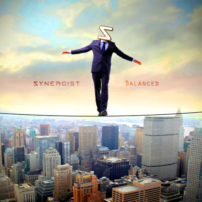

Balanced
by Synergist - Lyrics by CutcH*

feel the weight
tip the scale below
proportioned powers where the light was meant to grow
cast aside
left behind
now, we all demand achievement for our hard work
the sentiment, you'll find that is too hard to ignore
and without reward, you'll find its hard to motivate at all
but if we ain't hungry, why cannibalize the poor?
left to die
let the strong survive
yeah right
you feel the weight
tip the scale below
proportioned powers where the light was meant to grow
now you know, with a lack of balance caused by those who would tip the boat
it takes its toll on the world that strives to stay afloat
too far to one side
you'll find the greedy and the selfish thrive
polarized, well, you'd find outright denial of it all
but all in all, when it balances
we find the peace of mind and the life will carry on and on
let it carry on
spent all your life in adoration
of the golden mean
with the fears below
so rock the boat
in moderation
till the counterweight gets heavy, take back control
set us back on course
till you feel the weight
you know
proportioned power's where the light was meant to grow
now you know, with a lack of balance caused by those who would tip the boat
it takes its toll on the world that strives to stay afloat
too far one side
you'll find the greedy and the selfish, they thrive
polarized, well, you'd find outright denial of it all
but all in all, when it balances
we find the peace of mind and the light will carry on
beauty is truth
truth is beauty
that is all you'll know within this world
and it's all you need to know to save your soul
*CutcH is Craig McCutcheon |